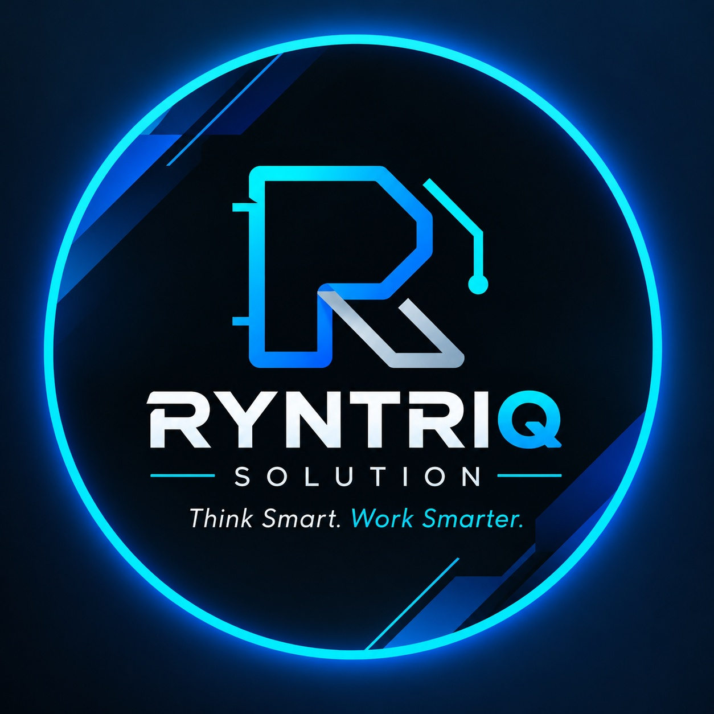

◎
Clarity before complexity
We try to understand the actual problem first, then choose an approach that is easy to explain and sensible to maintain.
 RYNTRIQ.SOLUTION
RYNTRIQ.SOLUTIONAt RYNTRIQ, we turn ideas into useful digital solutions. We bring creative thinking and practical technology together to help businesses work smarter, grow steadily and make the most of their next opportunity.

Every business has work that could be clearer: a website that doesn’t explain its value, information that takes too long to organize, or a routine process that keeps asking for the same manual effort. RYNTRIQ exists to help make those everyday digital challenges easier to tackle.
We work across web design and development, data entry and data care, and custom repetitive-task automation. These services can stand on their own or connect as part of a broader digital improvement—always shaped around the actual need.
Our aim is to create solutions that feel considered, make sense to the people using them, and give a business a stronger foundation for what comes next. We value clear communication, careful work and honest expectations at every stage.
We bring business thinking and modern technology together to create work that is useful today and ready to evolve.
We try to understand the actual problem first, then choose an approach that is easy to explain and sensible to maintain.
Thoughtful structure, accessible design and consistent information help make digital work feel trustworthy.
We want each project to leave you with a useful next step, clearer process or stronger digital presence.
Smarter work starts with understanding what matters.RYNTRIQ · THINK SMART. WORK SMARTER.
We’d be glad to learn about it and explore a practical way forward.